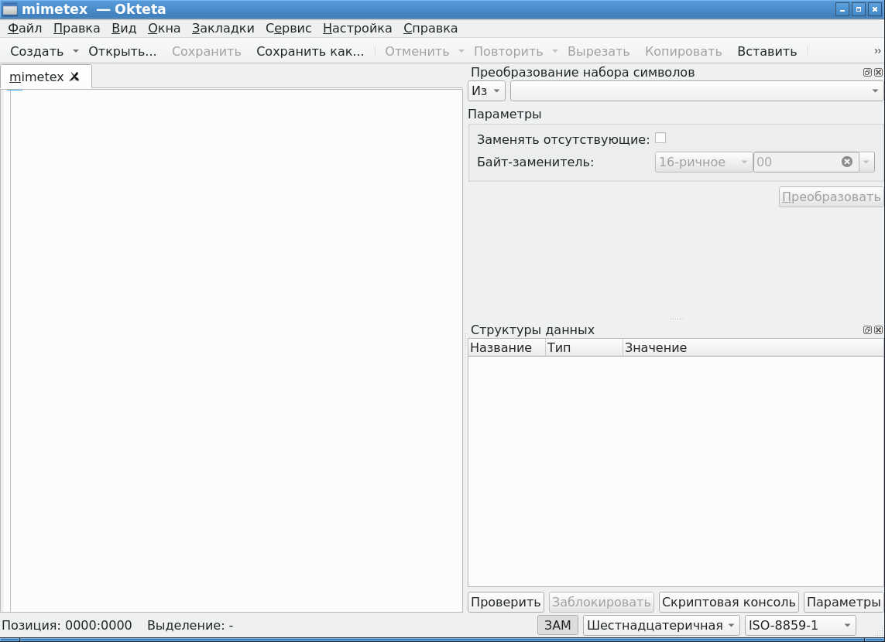
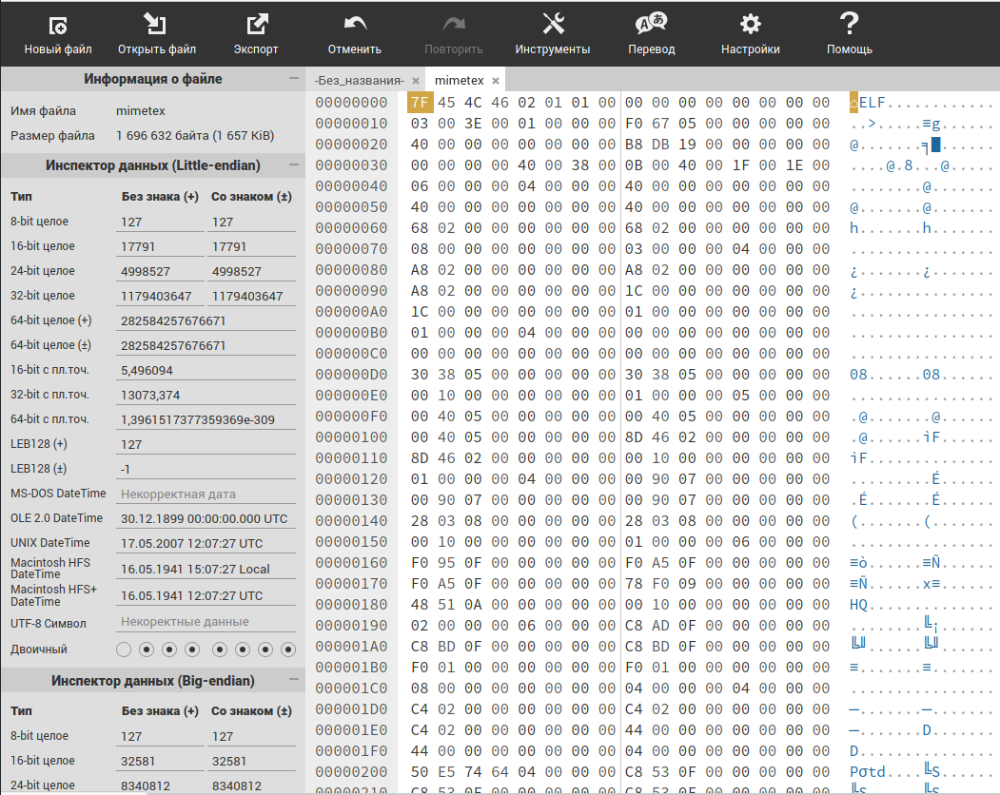

По непонятным причинам, в Linux исчезающе мало нормальных HEX-редакторов. А те, которые есть, либо неимоверно глючат в самых неожиданных местах, либо очень странно обращаются с файлами, и не знают что такое бережная работа с памятью в режиме окна. Все современные HEX-редакторы в Linux пытаются тупо засасывать в память весь файл, чтобы пользователь имел возможность поменять в нем один байт. А файлы бывают многогигабайтными. В общем, с HEX-редакторами в Linux все очень туго.
Вот, к примеру как выглядит Okteta с открытым файлом в Debian Stable 11:

Ничего не смущает? Правильно, по какой-то причине область с HEX-данными просто пустая. Ну перестала отрисовываться, что поделаешь. Баг, если что, находится вот здесь: https://bugs.kde.org/show_bug.cgi?id=471079. Краткий ответ разработчиков - мы не знаем почему у вас не работает, разбирайтесь в своем DE со своими шрифтами, или обратитесь к сообществу DE, может они помогут. Проблема на вайше стороне. Это при том, что все настройки в системе и все шрифты стандартные, никаких специфичных настроек в системе небыло.
* * *
В общем, дело дошло до того, что вместо нативных HEX-редакторов стало проще использовать онлайн-редакторы. В сети имеется редактор https://hexed.it, функциональность которого весьма впечатляет:

В данном редакторе левая панель инструментов скроллится вниз, и там можно найти все что нужно для безового редактирования в HEX-режиме, например поиск байт в файле или переход на заданный адрес.
Редактор имеет русифицированный интерфейс.
Редактор распространяется свободно (free) для некоммерческого и коммерческого использования. Исходники редактора (в явном виде) для бесплатного использования недоступны. По всей видимости, проект монетизируются за счет продажи компонентов, которые можно использовать в собственных проектах. На официальном сайте продается следующее:
HexEd.it editor component
HexEd.it editor component incl. source code
Whole HexEd.it source code
С большими файлами этот отлайн-редактор, на удивление, умеет обращаться правильно, и не выживает память. Согласно официальной документации:
Process large files even on low-RAM computers
HexEd.it can process files up to several Terabytes. Your files are not kept in memory. This means that the displayed data is read directly from your hard drive. It also means there is no delay in opening and editing large files.
Using highly efficient algorithms, you can also create new files in memory up to 10 GiB in size, even if you don't have that much RAM.
После загрузки веб-страницы с редактором, появляется сообщение, что редактор полностью загружен, находится в памяти и для его дальнейшей работы интернет больше не нужен. Надо разобраться, возможно имеется возможность выкачать все HTML+JS файлы редактора, и держать их локально длф испольдзования вне сети интернет. Похоже, что редактор хорошо подходит для распространения в виде пакетов WebApp (Браузер+сами страницы приложения), однако таких готовых сборок на официальном сайте небыло обнаружено.